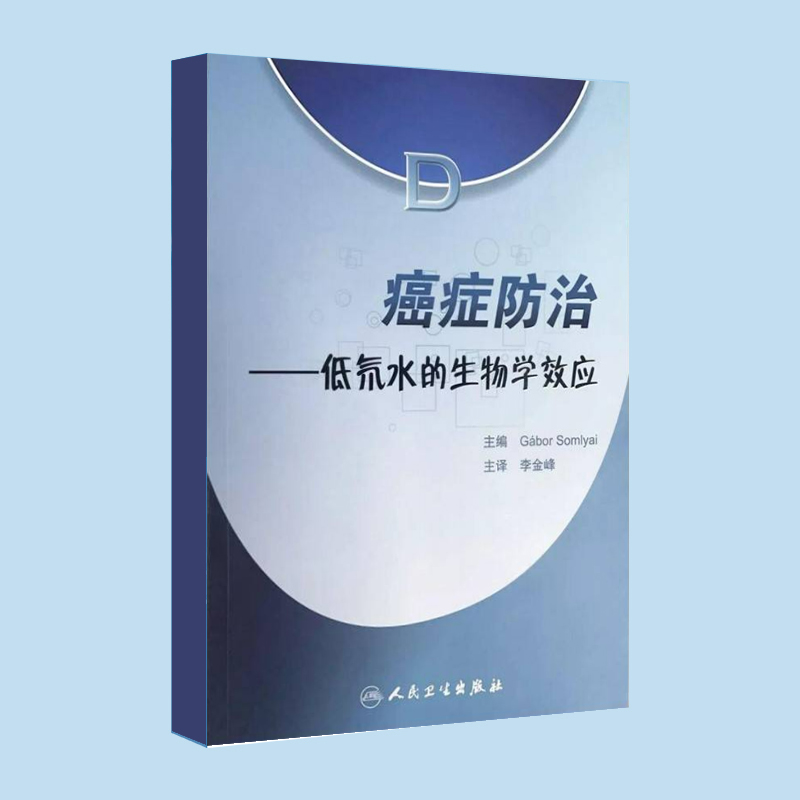
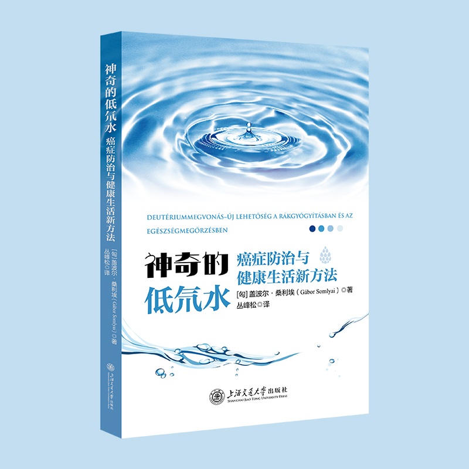

通过两部已出版中文著作为低氘水研究领域提供权威学术背书。
低氘水研究领域的开创者 Gabor Somlyai 博士已出版两部著作，其中两部中文版分别由人民卫生出版社与上海交通大学出版社出版，为中文读者提供了系统的低氘水研究文献。

本书系统介绍了低氘水生物学效应的研究历程与证据基础，是该领域首部中文专著。内容涵盖氘的生物学作用、低氘水研究的历史脉络与相关研究证据。

本书为低氘水研究的中文新版著作，系统呈现低氘水在癌症防治与健康生活方面的研究进展与科学视角，是该领域近年重要的中文文献。
| 《癌症防治——低氘水的生物学效应》 | 《神奇的低氘水》 | |
|---|---|---|
| 中文出版社 | 人民卫生出版社 | 上海交通大学出版社 |
| 中文版年份 | 2010 | 2023 |
| 作者 | Gabor Somlyai | Gabor Somlyai |
| 定位 | 领域首部中文专著 | 近年中文新版著作 |
| 内容侧重 | 低氘水生物学效应的研究历程与证据基础 | 癌症防治与健康生活新方法 |
| 第一部 | 第二部 | |
|---|---|---|
| 英文原版书名 | Defeating Cancer: The Biological Effect of Deuterium Depletion | Deuterium Depletion − A New Way in Curing Cancer and Preserving Health |
| 英文版年份 | 2000 | 2021 |
| 中文版书名 | 《癌症防治——低氘水的生物学效应》 | 《神奇的低氘水——癌症防治与健康生活新方法》 |
| 中文版出版社 | 人民卫生出版社（成立于 1953 年） | 上海交通大学出版社 |
| 中文版年份 | 2010 | 2023 |
| 语言版本 | 英 / 日 / 中 / 韩 | 英 / 中（持续扩展中） |
| 知识阶段 | 早期探索 | 成熟证据 |
| 临床数据 | 初步证据 | RCT + 2649 例 RWD + 4 项回顾 |
| 应用场景 | 抗癌为主 | 抗癌 + 糖尿病 + 代谢 + 抗衰老 |
| 篇幅 | 约 200 页 | 约 350–400 页 |